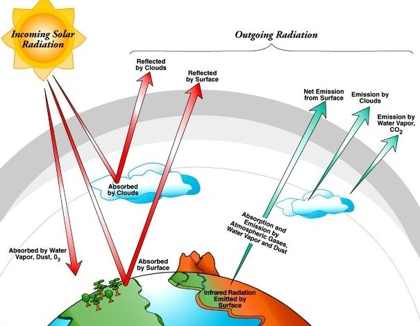
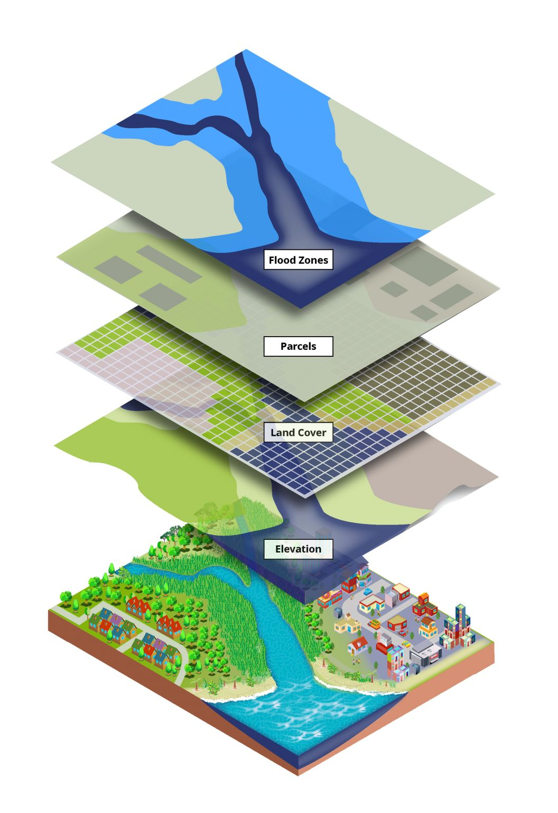

Remote sensing is the science of acquiring information about an object or phenomenon without being in direct contact with it.
It is a vast and complex field, with applications in many different disciplines, including geology, geography, environmental
science, agriculture, forestry, and hydrology.
How does remote sensing work?
Remote sensing works by measuring the energy that is emitted or reflected from an object. The energy can be in the form of visible light, infrared radiation, radar
signals, or other forms of electromagnetic radiation. The energy is then recorded and processed to create images or other data products that can be used to interpret the properties of the object.
MEO satellites orbit at intermediate altitudes, typically between 2,000 and 35,786 kilometers.
These orbits provide a balance between coverage and resolution, making them suitable for a variety of applications, including navigation systems like GPS.
GEO satellites are positioned at approximately 35,786 kilometers above the equator, allowing them to appear stationary relative to a fixed point on Earth.
These satellites provide continuous coverage of a specific region, making them ideal for applications like weather monitoring and communication.
Examples include weather satellites like GOES (Geostationary Operational Environmental Satellite).
Polar Orbit:
Satellites in polar orbits pass over Earth's poles, providing global coverage with each orbit.
These orbits are well-suited for Earth observation missions, as they cover the entire surface over time.
Measure greenhouse gases (GHGs) and other atmospheric pollutants, Monitor atmospheric ozone, Monitor surface UV radiation, Monitor aerosols (tiny particles in the air), Monitor cloud properties, Collect data for climate models
13 October 2017
Sentinel-5M
Sun-synchronous, ascending
Provide continuous observations of atmospheric composition, Improve the accuracy and precision of atmospheric measurements, Expand the range of atmospheric variables measured, Serve as a reference data set for other satellite missions
27 April 2021
Sentinel-6 (Michael Freilich)
Polar
Radar Altimetry, Sea-Surface Height Measurements. ocean color, and land surface temperature
Nov 2020
Sentinel-7
Sun-synchronous, descending
Monitor ocean circulation, sea ice, and ocean color
Sep 2021
Sentinel-8
Sun-synchronoun, ascending
Measure precipitation, clouds, and aerosols
April 2021
Swaths:
The swath width refers to the coverage area on the Earth's surface captured by a satellite during a single pass. It is determined by the satellite's sensor characteristics and the satellite's altitude. A wider swath allows for broader coverage but may sacrifice image resolution.
Understanding the interplay between orbits and swaths is essential for optimizing satellite mission design. LEO satellites, for instance, may have smaller swaths but offer higher revisit frequencies, making them suitable for applications requiring frequent observations. GEO satellites, on the other hand, have a fixed view but cover a larger area with each pass, making them ideal for continuous monitoring.
Key Elements of the Remote Sensing Process: From Energy Source to Application
In remote sensing, the interaction between incident radiation and the targets of interest is a common process. This is illustrated in imaging systems, which encompass seven key elements.
It's important to recognize that remote sensing also includes the detection of emitted energy and the utilization of non-imaging sensors.
Energy source or Illumination (A): The first requirement for remote sensing is to have
an energy source which illuminates or provides electromagnetic energy to the target
of interest
Radiation and the Atmosphere (B) - as the energy travels from its source to the
target, it will come in contact with and interact with the atmosphere it passes through. This
interaction may take place a second time as the energy travels from the target to the sensor.
Interaction with the Target (C) - once the energy makes its way to the target through the
atmosphere, it interacts with the target depending on the properties of both the target and the
radiation.
Recording of Energy by the Sensor (D) - after the energy has been scattered by, or
emitted from the target, we require a sensor (remote - not in contact with the target) to collect
and record the electromagnetic radiation.
Transmission, Reception, and Processing (E) - the energy recorded by the sensor has
to be transmitted, often in electronic form, to a receiving and processing station where the
data are processed into an image (hardcopy and/or digital)
Interpretation and Analysis (F) - the processed image is interpreted, visually and/or
digitally or electronically, to extract information about the target which was illuminated.
Application (G) - the final element of the remote sensing process is achieved when we
apply the information we have been able to extract from the imagery about the target in order
to better understand it, reveal some new information, or assist in solving a particular problem.
Components of Remote Sensing:
Interaction of Electromagnetic Radiation: Before radiation used for remote sensing reaches the Earth's surface, it has to travel through some distance of the Earth's atmosphere. Particles and gases in the atmosphere can affect the incoming light and radiation. These effects are caused by the mechanisms of scattering and absorption.

Image credit: US Department of Energy Office of Science
Rayleigh scattering: Rayleigh scattering occurs when particles are significantly smaller than the wavelength of radiation, such as tiny dust particles or nitrogen and oxygen molecules. This phenomenon causes shorter wavelengths of energy to scatter more than longer wavelengths. In the upper atmosphere, Rayleigh scattering is the predominant mechanism. The daytime sky appears blue because, as sunlight passes through the atmosphere, the shorter (blue) wavelengths of the visible spectrum scatter more than the longer ones. During sunrise and sunset, when light travels a longer path through the atmosphere, the scattering of shorter wavelengths is more pronounced, contributing to the colorful hues of the sky.
Mie scattering: Mie scattering takes place when particles are approximately the same size as the wavelength of the radiation. Common causes of Mie scattering include dust, pollen, smoke, and water vapor. Unlike Rayleigh scattering, Mie scattering impacts longer wavelengths. It is prevalent in the lower atmosphere where larger particles are more abundant, and it becomes dominant under overcast cloud conditions.
Nonselective scattering: The last significant scattering mechanism is known as nonselective scattering. This occurs when particles are considerably larger than the wavelength of the radiation, typically observed with water droplets and large dust particles. Nonselective scattering earns its name because it scatters all wavelengths roughly equally. Consequently, this type of scattering is responsible for the white appearance of fog and clouds to our eyes, as blue, green, and red light are scattered in approximately equal amounts, resulting in a combination that appears as white light.
Absorption: Absorption represents another primary mechanism in the interaction of electromagnetic radiation with the atmosphere. Unlike scattering, this process involves molecules in the atmosphere absorbing energy across different wavelengths. Ozone, carbon dioxide, and water vapor are the three primary atmospheric constituents responsible for this radiation absorption phenomenon.
Ozone: Ozone plays a crucial role in absorbing the potentially harmful ultraviolet radiation emitted by the sun, shielding most living organisms. The presence of this protective layer in the atmosphere prevents skin damage that would occur if exposed to sunlight without it.
Carbon dioxide (greenhouse gas): Carbon dioxide is often referred to as a greenhouse gas due to its strong absorption of radiation in the far infrared part of the spectrum, particularly associated with thermal heating. This absorption property contributes to trapping heat within the atmosphere. Meanwhile, water vapor in the atmosphere plays a significant role in absorbing both incoming longwave infrared and shortwave microwave radiation, occurring within the range of 22µm to 1m. The presence of water vapor in the lower atmosphere varies significantly based on location and time of year. For instance, air above a desert would contain minimal water vapor, limiting energy absorption, while tropical regions, characterized by high humidity, would have elevated concentrations of water vapor.
These gases have a selective absorption of electromagnetic energy within specific regions of the spectrum, influencing the areas suitable for remote sensing observations. Segments of the spectrum that are minimally affected by atmospheric absorption, making them valuable for remote sensors, are termed "atmospheric windows." By comparing the characteristics of the two primary energy sources, the sun and the Earth, with available atmospheric windows, we can identify wavelengths most effectively used for remote sensing.
The visible spectrum, aligned with the peak energy level of the sun and matching our eyes' sensitivity, corresponds to an atmospheric window. Additionally, the thermal infrared region around 10 µm is a window for the Earth's emitted heat energy, while wavelengths beyond 1 mm create a substantial window in the microwave region.
Now that we comprehend the intricate journey of electromagnetic energy from its source to the surface, the next exploration involves understanding the fate of this radiation upon reaching the Earth's surface.
Radiation - Target Interactions: Radiation that is not absorbed or scattered in the atmosphere can reach and interact with the Earth's surface. There are three forms of interaction that can take place when energy strikes or is incident upon the surface:
Absorption (A): Absorption occurs when radiation (energy) is absorbed into the target.
Transmission (T): Transmission occurs when radiation (energy) passes through a target.
Reflection (R): Reflection occurs when radiation "bounces" off the target and is redirected.
The total incident energy will interact with the surface in one or more of these three ways. The proportions of each will depend on the wavelength of the energy and the material and condition of the feature. In remote sensing, we are most interested in measuring the radiation reflected from targets. Reflection may occur in two main ways:
Specular reflection: When a surface is smooth, we get specular or mirror-like reflection where all (or almost all) of the energy is directed away from the surface in a single direction.
Diffuse reflection: Diffuse reflection occurs when the surface is rough and the energy is reflected almost uniformly in all directions.
Most earth surface features lie somewhere between perfectly specular or perfectly diffuse reflectors. If the wavelengths are much smaller than the surface variations or the particle sizes that make up the surface, diffuse reflection will dominate. For example, fine-grained sand would appear fairly smooth to long-wavelength microwaves but would appear quite rough to the visible wavelengths.
For example: Just like the atmosphere, different features on the landscape absorb and reflect electromagnetic radiation differently, and these differences allow us to map the Earth’s surface.
Green vegetation: Leaves contain a chemical compound called chlorophyll, which strongly absorbs radiation in the red and blue wavelengths while reflecting green wavelengths. During summer, when chlorophyll content is at its peak, leaves appear their greenest. In autumn, with reduced chlorophyll, there's less absorption and more reflection of red wavelengths, causing leaves to appear red or yellow (yellow being a combination of red and green wavelengths). Healthy leaves' internal structure acts as excellent diffuse reflectors of near-infrared wavelengths. While our eyes perceive trees as normal, if sensitive to near-infrared, they would appear extremely bright. Monitoring near-IR reflectance is a method for scientists to assess the health of vegetation.
Water: Water tends to absorb longer wavelengths, leading to minimal reflection. It appears dark, particularly in near-infrared wavelengths, helping to distinguish it from other land features. However, the reflectance of water varies with the composition, with clearer water appearing darker than muddy or sediment-laden water. Water's reflectance also increases with the presence of waves and foam. Reflectance in the visible region increases with turbidity and presence of organic matter, while in the near-IR, water strongly absorbs and reflects almost no energy, resulting in a dark appearance. Turbid water with significant suspended matter reflects more visible light.
Section 2: Remote Sensing Technologies
What are the different types of remote sensing?
Active and passive remote sensing are two fundamental approaches to acquiring information about objects or the environment from a distance. They differ in how they interact with and obtain data from the target.
Active Remote Sensing:
Definition: In active remote sensing, an external source of energy, usually provided by the sensor system itself, is used to illuminate the target, and the sensor measures the reflected or emitted energy.
Energy Source: The system actively emits pulses of energy (e.g., radar, lidar, or sonar).
Example
Radar: Uses radio waves to detect and measure the distance to targets.
Lidar: Uses laser light to measure distances and create detailed 3D maps.
Sonar: Used underwater to detect and locate objects using sound waves.
Interaction: The energy interacts with the target, and the sensor measures the reflected or backscattered energy.
Advantages:
Independent of external illumination (works day or night)
Useful for penetrating clouds and vegetation.
Provides distance or range information.
Passive Remote Sensing:
Definition: In passive remote sensing, the sensor relies on the natural radiation emitted or reflected by the target. It does not emit its own energy source.
Energy Source: The sensor captures the naturally occurring radiation from the sun or other sources.
Example
Optical sensors: Capture reflected sunlight to create images in the visible, near-infrared, and thermal infrared spectra.
Infrared sensors: Measure the heat emitted by objects.
Radio and microwave sensors: Capture naturally occurring emissions for various applications.
Interaction: The target emits or reflects energy, and the sensor measures this without actively illuminating the target.
Advantages:
Simplicity in design and operation.
Lower cost and power requirements.
Good for capturing detailed spectral information.
Both active and passive remote sensing techniques have unique advantages and applications. The choice between them depends on the specific goals of a remote sensing mission and the characteristics of the target and surrounding environment
What are the different platforms for remote sensing?
Classification Based on Operational Mechanism:
Remote sensing technologies involve the acquisition of information about objects or phenomena from a distance, typically from satellites, aircraft, drones, or other platforms. These technologies play a crucial role in various fields, including environmental monitoring, agriculture, urban planning, and disaster management. Here are some key remote sensing technologies:
Remote Sensing on Board
Explanation
Satellite Remote Sensing
Satellites equipped with sensors capture data from space.
Different types of satellites, such as optical, radar, and thermal, serve diverse purposes.
Aerial Remote Sensing
Aircraft equipped with sensors collect high-resolution images and data.
Suitable for detailed and localized observations.
Unmanned Aerial Vehicles (UAVs) or Drones
Small, unmanned aircraft equipped with sensors for data collection.
Ideal for precise and flexible data acquisition in specific areas.
These technologies collectively contribute to a comprehensive understanding of the Earth's surface and its changes over time, supporting diverse applications across multiple industries.
Classification Based on Sensors:
Remote sensing can be classified into various types based on the nature of the sensors used, the region of the electromagnetic spectrum observed, and the platforms from which data is collected. Here are some common types of remote sensing:
Nature of the Sensors Used
Definition
Application
Optical Sensors
Sensors capturing reflected sunlight to create images in various spectral bands.
Visible imagery for land cover classification.
Near-infrared for vegetation health assessment.
Radar Sensors
Sensors using radio waves to detect and measure distances to targets.
All-weather observations, penetrating clouds and vegetation.
Surface deformation monitoring.
LiDAR Sensors
Sensors utilizing laser light to measure distances and create detailed 3D maps.
Topographic mapping.
Forest canopy studies.
Infrared and Thermal Sensors
Sensors measuring heat emitted by objects, providing temperature information.
Agriculture for crop health assessment.
Building inspections for heat loss detection.
Hyperspectral Sensors
Sensors capturing images in numerous narrow and contiguous spectral bands.
Detailed analysis of material spectral signatures.
Mineral exploration.
GPS (Global Positioning System)
System providing precise location data for remote sensing observations.
Georeferencing and mapping.
GIS (Geographic Information Systems)
Systems integrating, analyzing, and visualizing remote sensing data in a spatial context.
Enhancing interpretation and utilization of remote sensing information.
Each type of remote sensing has its strengths and applications, and the choice of technology depends on the specific requirements of a given project or study.
Section 3: Applications of Remote Sensing
Remote sensing has a wide range of applications, including:
Application Area
Applications
Agriculture
Monitoring crop health and growth.
Precision agriculture for optimized resource use.
Assessing soil conditions and moisture levels.
Environmental Monitoring
Tracking deforestation and land use changes.
Monitoring water quality and pollution.
Assessing natural disasters like wildfires and floods.
Urban Planning
Mapping and analyzing urban expansion.
Assessing infrastructure development.
Monitoring land use patterns for city planning.
Disaster Management
Early detection and monitoring of natural disasters.
Assessing damage and planning emergency responses.
Monitoring post-disaster recovery and rehabilitation.
Forestry
Mapping forest cover and biodiversity.
Monitoring illegal logging and deforestation.
Assessing forest health and ecosystem dynamics.
Water Resource Management
Monitoring water availability and usage.
Assessing changes in lakes, rivers, and reservoirs.
Mapping watersheds and tracking water quality.
Archaeology
Discovering and mapping archaeological sites.
Monitoring changes to historical landscapes.
Preserving cultural heritage through documentation.
Climate Change
Monitoring changes in temperature and climate patterns.
Assessing the impact on glaciers, ice caps, and sea levels.
Tracking carbon emissions and deforestation contributing to climate change.
Significance of Remote Sensing in Solving Practical Problems:
Application Area
Overview
Benefits
Precision Agriculture
Enables farmers to optimize crop management, monitor soil conditions, and enhance resource use efficiency.
Improved crop yields, resource efficiency, and sustainable farming practices.
Environmental Monitoring
Facilitates real-time tracking of deforestation, pollution levels, and natural disasters for informed conservation and mitigation strategies.
Timely response to environmental threats, conservation planning, and pollution control.
Urban Planning
Provides critical data for assessing urban expansion, infrastructure development, and land use patterns, aiding in sustainable city planning.
Efficient urban development, infrastructure planning, and sustainable land use practices.
Disaster Management
Offers early detection, monitoring, and assessment tools for natural disasters, supporting efficient emergency response and recovery efforts.
Enhanced disaster preparedness, quick response, and effective recovery strategies.
Forestry
Assists in monitoring and managing forest ecosystems, combating illegal logging, and preserving biodiversity through informed conservation strategies.
Better forest management, biodiversity preservation, and prevention of illegal logging.
Water Resource Management
Helps monitor water availability, usage, and quality, contributing to sustainable water resource management and conservation.
Sustainable water resource management, efficient water usage, and conservation efforts.
Archaeology
Revolutionizes archaeological research by discovering, mapping, and preserving historical sites and cultural heritage through detailed documentation.
Improved archaeological discoveries, preservation of cultural heritage, and detailed documentation.
Climate Change
Provides crucial data for monitoring climate patterns, assessing environmental changes, and understanding the impact of human activities on global climate systems.
Enhanced understanding of climate change, informed environmental policies, and mitigation strategies.
Satellite and Sensor Deployment: Selection and deployment of appropriate satellites and sensors based on mission objectives and desired spatial and spectral resolutions.
Data Acquisition: Actively or passively collecting data from the target area using sensors (e.g., optical, radar, LiDAR) on satellites, aircraft, or other platforms.
Georeferencing: Establishing the geographic location of the acquired data, ensuring accurate spatial referencing for subsequent analyses.
ii. Pre-processing steps:
Calibration: Adjusting sensor readings to account for variations in sensor sensitivity, atmospheric conditions, and other factors, ensuring accuracy and consistency.
Correction: Correcting for atmospheric interference, such as haze, clouds, and aerosols, to improve the quality of the acquired data.
Normalization: Standardizing data values to a consistent scale, facilitating meaningful comparisons and analyses.
Orthorectification: Correcting geometric distortions caused by terrain variations, ensuring accurate spatial representation.
iii. Image Enhancement Techniques:
Contrast Stretching: Improving visual interpretation by expanding the range of pixel values, enhancing image features.
Histogram Equalization: Enhancing contrast by redistributing pixel values across the entire range.
Spatial Filtering: Smoothing or sharpening images to highlight or suppress certain features using convolution operations.
Principal Component Analysis (PCA): Reducing data dimensionality while preserving key information for improved visualization and analysis.
iv. Image Classification and Feature Extraction:
Supervised Classification: Training a classification algorithm using labeled training samples to categorize pixels into predefined classes.
Unsupervised Classification: Clustering pixels based on statistical similarities without prior class information, useful for exploratory analysis.
Object-Based Image Analysis (OBIA): Classifying image objects (groups of pixels) rather than individual pixels, considering contextual information for more accurate results.
Feature Extraction: Identifying and extracting specific features from the imagery, such as land cover types, roads, or buildings.
Change Detection: Comparing multiple images over time to identify and analyze changes in the landscape, providing valuable information for various applications.
v. Additional Steps:
Validation and Accuracy Assessment: Assessing the reliability and accuracy of the processed data through ground truthing and validation techniques.
Data Integration:Combining remote sensing data with other geospatial datasets for comprehensive analysis.
Data Interpretation and Reporting:Interpreting the processed data to derive meaningful information and generating reports for decision-making.
vi. Post-Processing Steps:
Image Mosaicking: Combining multiple images of the same area to create a seamless and complete representation, especially important for large-scale mapping.

The map incorporates multiple layers of the same geographical area with distinct attributes, enhancing its effectiveness for thorough study and analysis.
Panchromatic Sharpening: Enhancing the spatial resolution of
multispectral images by fusing them with higher-resolution panchromatic images.
Image Fusion: Integrating information from multiple sensors or sources to create a composite image with enhanced features.
Data Compression: Reducing the volume of data while retaining important information, facilitating easier storage and transmission.
Radiometric Correction: Adjusting the radiometric values of pixels to account for variations caused by atmospheric conditions, sensor characteristics, or other factors.
Temporal Filtering: Smoothing or filtering time-series data to reduce noise and highlight temporal trends for change detection.
Land Cover Classification Refinement: Iterative processes to improve the accuracy of land cover classification by refining class boundaries or correcting misclassifications.
Topographic Correction: Compensating for terrain-induced variations in reflectance, ensuring consistency in image interpretation.
Vegetation Index Calculation: Computing vegetation indices such as NDVI (Normalized Difference Vegetation Index) to quantify vegetation health and density.
Terrain Modeling: Creating 3D models of the Earth's surface using elevation data for applications like urban planning or geological studies.
Data Integration with GIS: Combining remote sensing data with Geographic Information Systems (GIS) data for more comprehensive spatial analysis.
Accuracy Assessment: Evaluating the accuracy of classification results through ground truthing and validation processes.
Data Visualization: Creating visualizations, such as maps or thematic layers, to facilitate easy interpretation of the processed data.
Report Generation: Documenting and presenting findings in a structured report for decision-making or further analysis.
Data Interpretation: Interpreting processed data to derive meaningful information and insights for specific applications.
Section 5: Future Trends in Remote Sensing
The future of remote sensing is bright, with a number of new technologies and applications on the horizon. These include
The development of new sensors with higher spatial, spectral, and temporal resolution.
The increased use of artificial intelligence (AI) to analyze and interpret remote sensing data.
The development of new applications, such as remote sensing of air quality and greenhouse gas emissions.
Conclusion
In conclusion, remote sensing stands as a powerful and versatile tool, extending our observational capabilities beyond the limits of human vision. We explored the fundamentals, diverse technologies, and wide-ranging applications, showcasing its pivotal role in agriculture, environmental monitoring, urban planning, disaster management, and more. The journey through data analysis and processing unveiled the intricate steps involved in transforming raw data into actionable insights. Looking ahead, the future promises exciting trends, driven by advancements in technology and an ever-expanding array of applications. Remote sensing continues to be a driving force in understanding our planet, fostering sustainable practices, and making informed decisions for a rapidly evolving world